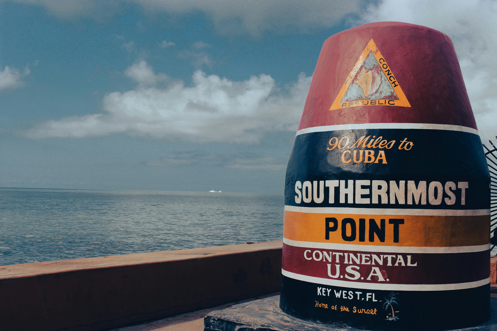

Visit Key West
Paradise Awaits
Key West, the southernmost point in the United States, is famous for watersports, lively nightlife, beaches, historic sites and its pastel, conch-style architecture.Key West is full of surprising stories, colorful characters and unique moments in American history. From shipwreck salvaging and pirates to famous writers and creative local traditions, the island is packed with interesting details that make every visit memorable. Learn all about some of the most fascinating Key West facts that help explain why this island is unlike any other place in the country.